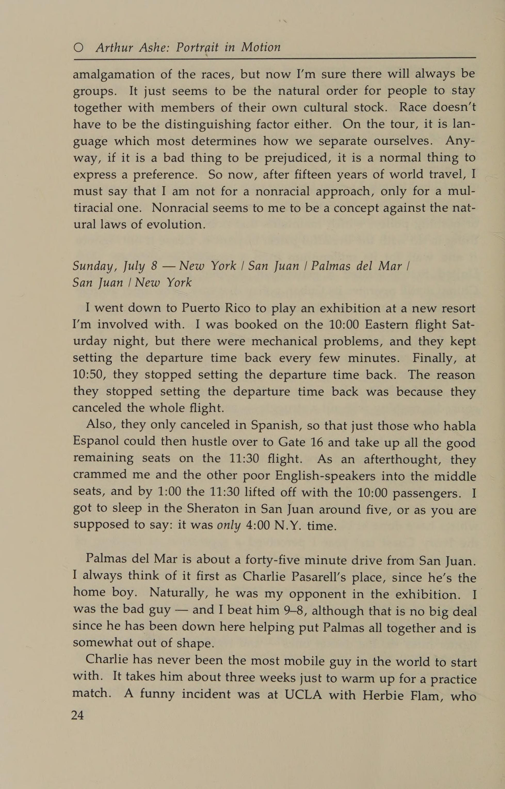
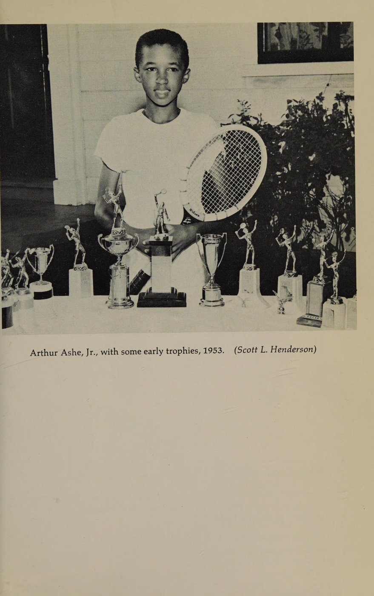
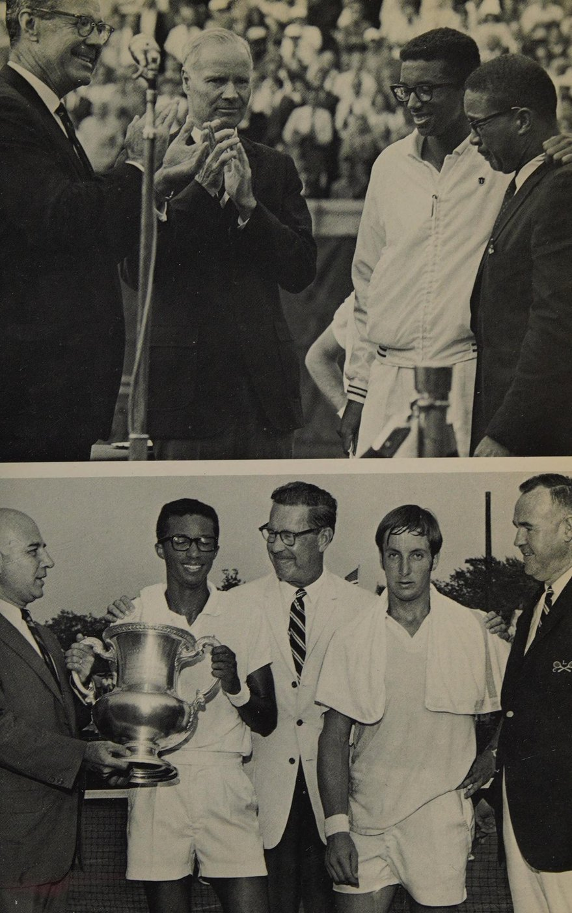
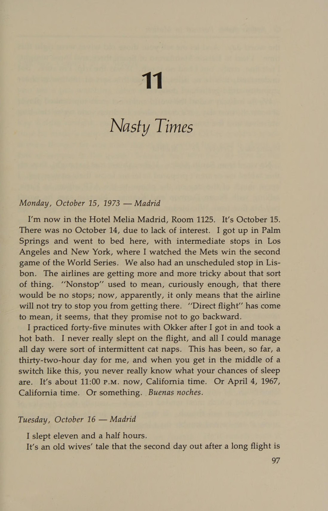
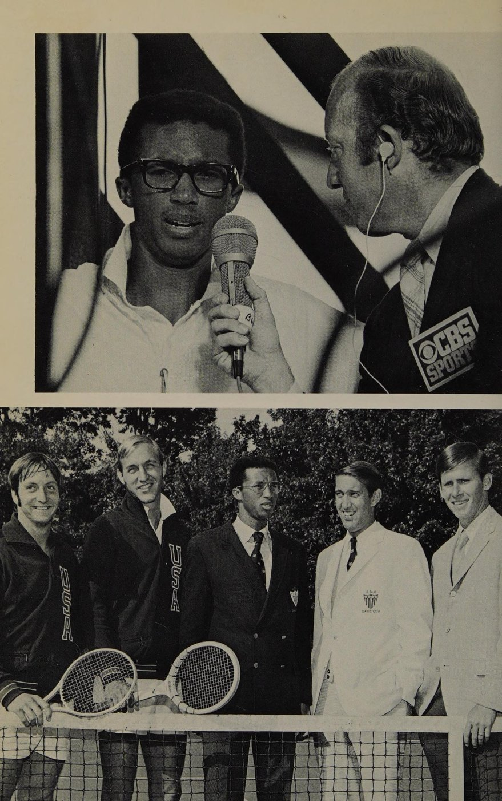
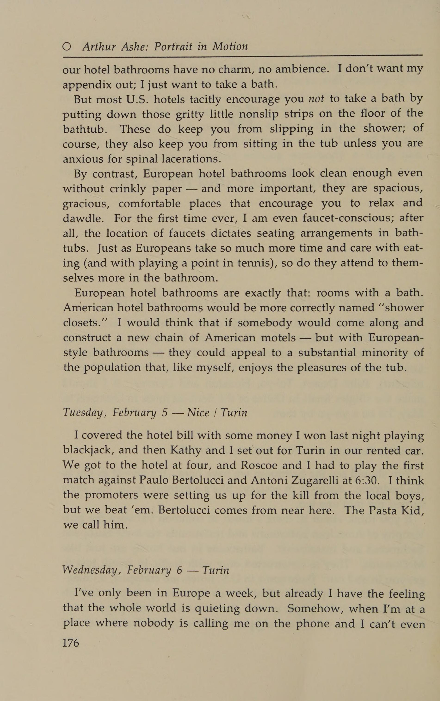

Arthur Ashe - Tác phẩm nhật ký chân thực và sâu sắc bậc nhất lịch sử quần vợt thế giới
Lời Tựa: Một Năm Chuyển Động Không Ngừng
Arthur Ashe - Nhà Vô Địch Grand Slam, Nhà Hoạt Động Xã Hội
Tôi muốn chia sẻ đôi lời để bạn đọc có thể thấu cảm trọn vẹn hơn những trang sách này. Đây là cuốn nhật ký ghi lại những gì tôi đã trải nghiệm và những suy tư cuộn trào trong tâm trí tôi suốt một năm ròng rã, từ giải Wimbledon 1973 đến Wimbledon 1974. Nó có phần rời rạc, nhảy cóc - đúng như chính nhịp sống xáo trộn của đời tôi. Những chủ đề dường như chẳng liên quan gì đến nhau cứ nối tiếp nhau xuất hiện: Một trận đấu căng thẳng trên mặt sân cỏ, một cuộc tranh luận chính trị nảy lửa về nạn phân biệt chủng tộc, một bữa ăn vội vã ở sân bay, và nỗi cô đơn trong căn phòng khách sạn xa lạ.
Tôi không phải là một tay vợt điển hình trên tour đấu chuyên nghiệp, và những trải nghiệm của tôi chắc chắn không hề giống với số đông. Tôi sống một cuộc đời dị biệt, và cùng với các đồng nghiệp của mình, tôi có được đặc ân được nhìn ngắm thế giới nhiều hơn phần lớn nhân loại. Chỉ trong một năm duy nhất này, tôi đã thi đấu trên 5 châu lục, thực hiện 129 chuyến bay, đặt lưng ngủ trên 71 chiếc giường khách sạn khác nhau và vượt qua tổng quãng đường hơn 165.000 dặm (khoảng 265.000 km).
Cuốn sách này là bức chân dung sống động về một vận động viên da màu đang nỗ lực tìm kiếm sự hoàn thiện trong môn thể thao từng được coi là thành trì của giới quý tộc da trắng, giữa một thời đại thế giới đang chuyển mình dữ dội.
PHẦN 1: TOUR ĐẤU & GÁNH NẶNG KỲ VỌNG
Chương 1: Thế Kỷ Thứ Hai Bắt Đầu
The Second Hundred Years Begin
Cuộc Khủng Hoảng Wimbledon 1973 Và Sự Trỗi Dậy Của Hiệp Hội ATP
Thứ Hai, ngày 11 tháng 6 năm 1973 - Nam Tư và Luân Đôn. Rất nhiều sự kiện chấn động đã ập đến vào đúng cái ngày tôi quyết định bắt đầu cuốn nhật ký này. Vụ việc bắt đầu từ tay vợt người Nam Tư Nikki Pilic: Anh bị liên đoàn quần vợt nước mình cấm thi đấu vì từ chối tham dự Davis Cup, và Liên đoàn Quần vợt Quốc tế (ILTF) đã mù quáng ủng hộ lệnh cấm đó bằng cách cấm Pilic tham dự Wimbledon.
Đối với chúng tôi - những tay vợt chuyên nghiệp vừa mới thành lập Hiệp hội Quần vợt Nhà nghề (ATP) - đây là giọt nước tràn ly. Chúng tôi không còn là những đấu thủ bị các quan chức quyền lực điều khiển như những con rối. Chúng tôi đã tiến hành một cuộc bỏ phiếu lịch sử tại Luân Đôn: Nếu Pilic không được thi đấu, chúng tôi sẽ tẩy chay giải Wimbledon danh giá. Hơn 80 tay vợt hàng đầu thế giới, trong đó có tôi, Stan Smith và các ngôi sao lớn nhất, đã kiên quyết rút lui khỏi giải. Wimbledon 1973 vắng bóng những nhà vô địch thực thụ, nhưng đó chính là thời khắc khai sinh ra kỷ nguyên mới của quần vợt chuyên nghiệp - nơi tiếng nói và quyền lợi của người chơi được tôn trọng.
Chương 2: 'Đây Không Phải Là Giải Vô Địch Thế Giới'
'It is not the championship of the world'
Đấu Trường Forest Hills Và Gánh Nặng Trách Nhiệm Xã Hội
Giải Quần vợt Mỹ Mở rộng (U.S. Open) tại Forest Hills luôn là một lễ hội ồn ào và hỗn loạn của thành phố New York. Khán giả không giữ sự im lặng tôn kính như ở Wimbledon; họ hò hét, ăn xúc xích, uống bia và bình phẩm gay gắt ngay trên khán đài.
Tôi luôn phải đối diện với một nghịch lý cay đắng: Khi bước ra sân đấu ở Forest Hills, giới truyền thông không chỉ nhìn tôi như một tay vợt đang cố gắng đánh quả bóng nỉ qua lưới, mà họ soi mói từng hành vi của tôi dưới lăng kính chủng tộc. Người ta chất vấn tôi về các phong trào dân quyền, về chế độ Apartheid ở Nam Phi, và về những kỳ vọng của cộng đồng người Mỹ gốc Phi. Tôi hiểu rằng mình không thể trốn chạy khỏi vị thế của một biểu tượng; tôi phải học cách gánh vác trách nhiệm đó bằng sự đĩnh đạc và tri thức sâu sắc.
Chương 3: Đấu Sĩ & Những Người Hát Rong
Gladiators & Troubadours
Đời Sống Du Mục Của Những Tay Vợt Chuyên Nghiệp
Các tay vợt chuyên nghiệp chúng tôi vừa giống như những võ sĩ giác đấu La Mã (Gladiators) bước vào đấu trường sinh tử để tranh đoạt vinh quang, lại vừa giống như những người hát rong thời Trung cổ (Troubadours) phiêu bạt giang hồ từ thành phố này sang thành phố khác.
Chúng tôi sống trong vali hành lý, ăn những bữa ăn lạ lẫm, thở bầu không khí máy lạnh ngột ngạt của các chuyến bay đêm xuyên múi giờ, và thức dậy ở một đất nước mà mình thậm chí không biết nói ngôn ngữ bản địa. Sự hào nhoáng mà người hâm mộ nhìn thấy trên màn hình tivi chỉ là bề nổi của một tảng băng chìm; phần chìm khổng lồ bên dưới là sự hao mòn thể lực khủng khiếp, những chấn thương dai dẳng và nỗi cô đơn bủa vây sau mỗi ánh đèn sân khấu vụt tắt.

Chương 4: Hai Trận Chung Kết Đáng Nhớ
Two Finals
Từ Mặt Sân Gỗ Nảy Nhanh Đến Đất Đỏ Châu Phi
Cuộc đời thi đấu đưa tôi trải qua những sự tương phản tột cùng. Tôi thi đấu trận chung kết giải Alamo trên mặt sân thảm tổng hợp siêu nhanh dưới ánh đèn rực rỡ của nước Mỹ, rồi chỉ vài tuần sau đã có mặt tại Johannesburg để bước vào trận chung kết giải Nam Phi Mở rộng (South African Open).
Tại Nam Phi, đối thủ của tôi không chỉ là người đứng ở bên kia tấm lưới, mà là cả một hệ thống phân biệt chủng tộc tàn bạo đang bủa vây bên ngoài sân vận động Ellis Park. Khi tôi bước ra sân, hàng ngàn khán giả da màu ngồi chen chúc ở những khu vực biệt lập đã đứng dậy reo hò trong nước mắt. Họ nhìn thấy ở tôi một tia hy vọng rằng người da màu hoàn toàn có thể đường hoàng đứng ngang hàng và đánh bại những đối thủ da trắng hùng mạnh nhất.

Hình ảnh tư liệu: Arthur Ashe vung vợt đầy dũng mãnh và thanh thoát
Chương 5: Niềm Vui Đã Biến Mất
The Fun Is All Gone
Khi Thể Thao Trở Thành Cỗ Máy Kinh Doanh Triệu Đô
Đã có những khoảnh khắc tôi chợt giật mình tự hỏi: Niềm vui thuần khiết thời thơ ấu của môn quần vợt đã biến đi đâu mất rồi? Thời còn là một cậu bé gầy gò chơi bóng tại công viên Brookfield ở Richmond, Virginia, tôi chơi bóng vì tình yêu say mê với từng tiếng chạm bóng êm ái vào mặt vợt gỗ.
Giờ đây, quần vợt đỉnh cao đã biến thành một ngành công nghiệp thương mại khổng lồ với những hợp đồng tài trợ béo bở, tiền thưởng kỷ lục và áp lực sinh tồn nghẹt thở. Mỗi điểm số bị đánh mất đồng nghĩa với việc bạn đánh mất hàng ngàn đô la và tụt dốc trên bảng xếp hạng thế giới. Sự thương mại hóa mang lại cho chúng tôi sự giàu có, nhưng nó cũng cướp đi sự hồn nhiên và biến tình bạn giữa các đấu thủ thành những mối quan hệ dè dặt, toan tính.
Chương 6: Mức Độ Của Sự Kỳ Vọng
The Level of Expectations
Gánh Nặng Đại Diện Và Lòng Kiên Định Của Người Tiên Phong
Là vận động viên da màu đầu tiên và duy nhất trong lịch sử giành chức vô địch U.S. Open và Australian Open, mức độ kỳ vọng mà công chúng đặt lên vai tôi là vô cùng nặng nề.
Nếu một tay vợt da trắng thua một trận đấu, người ta chỉ nói rằng hôm nay anh ấy chơi không tốt. Nhưng nếu tôi thua trận, một số người sẽ lập tức hoài nghi về bản lĩnh và ý chí thi đấu của cả một chủng tộc. Tôi không bao giờ cho phép mình nổi nóng, chửi thề hay đập vỡ vợt trên sân, bởi vì tôi biết rằng hàng triệu đứa trẻ da màu đang nhìn vào tôi như một tấm gương soi. Tôi phải chứng minh cho cả thế giới thấy rằng phẩm giá, học thức và sự tự chủ mới là sức mạnh vĩ đại nhất của một nhà vô địch.
PHẦN 2: TÂM LÝ & TRIẾT LÝ ĐIỀM ĐẠM (COOL)
Chương 7: Ngày Tồi Tệ Nhất Trong Năm
The Worst Day of the Year
Khi Mọi Kỹ Năng Đều Phản Bội Bạn Trên Sân Đấu
Mỗi vận động viên chuyên nghiệp đều phải trải qua những ngày thi đấu thảm họa - những ngày mà quả bóng dường như có mắt để tìm đến lưới, đôi chân như bị đổ chì và mọi quyết định chiến thuật đều dẫn tới ngõ cụt. Bạn thức dậy trong một khách sạn xa lạ, cảm thấy cơ thể rệu rã và mất phương hướng.
Điều đáng sợ nhất không phải là việc để thua một trận đấu, mà là sự hoài nghi bản thân gặm nhấm tâm hồn bạn sau đó: Liệu thời đỉnh cao của mình đã qua rồi sao? Liệu mình có còn đủ nhiệt huyết để tiếp tục vắt kiệt thể lực cho những cuộc viễn chinh này nữa không? Tôi học được rằng những ngày tồi tệ nhất chính là những người thầy nghiêm khắc nhất. Chúng bóc trần những điểm yếu của bạn và buộc bạn phải tái định nghĩa lại ý chí sinh tồn của một đấu sĩ.
Chương 8: Gia Đình & Những Người Bạn Đồng Hành Kỳ Lạ
Wives and Strange Bedfellows
Hậu Phương Và Mối Quan Hệ Giữa Những Kẻ Đối Đầu
Đời sống hôn nhân của các tay vợt trên tour đấu chuyên nghiệp là một bức tranh muôn màu và đầy thử thách. Có những gia đình như Frew McMillan hay Cliff Richey - nơi người vợ luôn đồng hành cùng chồng qua mọi giải đấu, tạo nên một tổ ấm di động che chở cho người đàn ông trước những cơn bão táp tâm lý của quần vợt. Lại có những trường hợp như Margaret Court, nơi người chồng tận tụy lùi lại phía sau để hỗ trợ vợ chinh phục những danh hiệu Grand Slam lịch sử.
Đồng thời, mối quan hệ giữa chúng tôi - những tay vợt đối đầu trực tiếp - là một trạng thái kỳ lạ. Ban ngày, chúng tôi chiến đấu sinh tử trên sân như những kẻ thù không đội trời chung; nhưng ban đêm, chúng tôi lại cùng ngồi ăn tối trong một nhà hàng, chia sẻ những câu chuyện gia đình và cùng nhau bàn bạc cách bảo vệ quyền lợi của hiệp hội ATP. Sự thấu cảm sâu sắc giữa những người cùng cảnh ngộ tạo nên một thứ tình bạn đặc biệt mà người ngoài cuộc khó lòng hình dung được.
Chương 9: Hiện Tượng Nghẹn Thở Dưới Áp Lực (Choking)
Choking Under Pressure
Giải Phẫu Cơn Ác Mộng Của Mọi Tay Vợt
Bất kỳ tay vợt nào nói rằng họ chưa bao giờ bị "nghẹn thở" (choking) trong đời đều là kẻ nói dối. Nghẹn thở là hiện tượng tâm lý kỳ quái khi một tay vợt đang dẫn trước đối thủ với tỷ số cách biệt (ví dụ 5-2 và 40-15), nhưng đột nhiên nhận thức được rằng mình chỉ còn cách chiến thắng một cú đánh nữa.
Chính khoảnh khắc nhận thức đó kích hoạt nỗi sợ hãi: "Nếu mình đánh hỏng quả này thì sao?". Ngay lập tức, phản xạ tự nhiên biến mất. Cổ tay bạn cứng đờ, bạn ngừng thở, và bạn bắt đầu cố gắng "lái" quả bóng bằng ý nghĩ thay vì để cơ bắp vung vợt theo quán tính bản năng. Cú giao bóng trở nên rụt rè, và trước khi bạn kịp hiểu chuyện gì đang xảy ra, tỷ số đã bị cân bằng 5-5. Tôi đã từng nếm trải cảm giác nghẹn thở cay đắng đó, và bài học duy nhất để hóa giải nó là học cách chấp nhận sự mong manh của chiến thắng để buông lỏng tâm trí.

Hình ảnh tư liệu: Arthur Ashe cùng các đồng nghiệp trong tour đấu quốc tế

Chương 10: Sự Điềm Đạm (Cool)
The Philosophy of Cool
Nghệ Thuật Khắc Kỷ Của Arthur Ashe
Người ta thường mô tả tôi trên sân đấu bằng từ "Cool" - một sự điềm đạm, lạnh lùng và bất biến. Dù tôi vừa tung ra một cú ace sấm sét hay vừa phạm lỗi giao bóng kép ở match point, nét mặt tôi dường như không hề biến đổi.
Nhiều người tưởng rằng đó là sự lạnh lùng bẩm sinh, nhưng thực tế đó là một chiến lược khắc kỷ được rèn giũa có ý thức. Thầy của tôi - Bác sĩ Walter Johnson - đã dạy tôi từ thuở thiếu thời: "Là một cậu bé da màu bước vào những câu lạc bộ da trắng, con không được phép biểu lộ bất kỳ sự tức giận hay bực bội nào. Bất kỳ một cử chỉ mất kiểm soát nào của con cũng sẽ bị người ta vịn vào để đánh giá cả cộng đồng của con". Tôi biến sự điềm đạm đó thành một tấm khiên giáp bảo vệ tâm hồn mình và thành vũ khí tâm lý đáng sợ nhất: Khi đối thủ thấy bạn không hề bị lay chuyển bởi bất kỳ nghịch cảnh nào, chính họ sẽ là người rơi vào hoảng loạn.
Chương 11: Những Thời Khắc Gai Góc & Xung Đột
Nasty Times
Đối Đầu Với 'Gã Hề' Ilie Nastase Và Ranh Giới Đạo Đức
Ilie Nastase là một trong những tài năng thiên bẩm xuất chúng nhất mà quần vợt thế giới từng sản sinh, nhưng anh ta cũng là một cơn ác mộng đối với mọi quy chuẩn ứng xử văn minh. Nastase có thể trêu chọc trọng tài, bắt chước tiếng chim kêu, cãi cọ với khán giả và cố tình làm gián đoạn Nhịp điệu trận đấu (tempo/rhythm) của đối thủ bằng đủ mọi trò hề.
Tôi đã trải qua nhiều trận đấu căng thẳng tột độ với Nastase. Đã có lúc tôi muốn lao qua lưới để tóm lấy cổ áo anh ta. Nhưng tôi nhận ra rằng nếu mình nổi giận, mình đã tự nguyện bước vào vũng bùn tâm lý mà Nastase giăng ra. Trong một trận đấu tại Stockholm Masters, khi Nastase liên tục giở trò khiêu khích, tôi đã làm một điều chưa từng có tiền lệ: Tôi bình thản thu dọn vợt, bước tới bắt tay trọng tài và rời khỏi sân, chấp nhận bị xử thua. Hành động đó đã làm rúng động giới quần vợt, buộc ban tổ chức phải siết chặt kỷ luật và thức tỉnh chính Nastase về giới hạn của sự tôn trọng.
PHẦN 3: ĐẤU TRANH XÃ HỘI & NHỮNG ĐỐI THỦ LỚN
Chương 12: Mùa Thu Hoạch Từng Bước
Part of a Gradual Harvest
Chuyến Đi Lịch Sử Đến Nam Phi Và Cuộc Chiến Chống Apartheid
Trong suốt nhiều năm, chính quyền phân biệt chủng tộc Nam Phi đã liên tục từ chối cấp thị thực (visa) cho tôi. Nhưng đến năm 1973, dưới áp lực tẩy chay quốc tế ngày càng gia tăng, họ đã buộc phải nhượng bộ và đồng ý cho tôi nhập cảnh để tham dự giải Nam Phi Mở rộng tại Johannesburg.
Nhiều nhà hoạt động xã hội cấp tiến ở Mỹ đã chỉ trích tôi, cho rằng việc tôi đặt chân đến Nam Phi là hành động hợp thức hóa chế độ Apartheid. Nhưng tôi kiên định với triết lý của mình: Sự cô lập hoàn toàn chỉ khiến chế độ độc tài thêm phần ngoan cố; cách tốt nhất để đập tan bức tường định kiến là bước thẳng qua cánh cửa của nó, mang theo ánh sáng của sự thật và truyền cảm hứng trực tiếp cho những người đang bị áp bức. Tôi chỉ đồng ý tham gia với điều kiện khán đài sân vận động Ellis Park không được phân chia khu vực theo màu da, và tôi được tự do đi lại tiếp xúc với đồng bào da màu tại thị trấn Soweto nghèo khó.
Chương 13: Những Sự Giao Tiếp Nhỏ Nhoi
These Small Communications
Sức Mạnh Của Những Cử Chỉ Chân Thành Xuyên Biên Giới
Tại Johannesburg, tôi bước ra sân đối đầu với Bob Hewitt - một tay vợt gốc Úc đã nhập quốc tịch Nam Phi. Bầu không khí căng thẳng đến nghẹt thở. Cả sân vận động nín lặng dõi theo từng đường bóng. Nhưng điều làm tôi xúc động sâu sắc nhất không phải là tỷ số trận đấu, mà là những cuộc gặp gỡ bí mật với các nhà văn, nhà thơ và thanh niên da màu tại Soweto vào ban đêm.
Một thi sĩ trẻ người da màu đã nói với tôi: "Arthur, sự hiện diện của anh ở đây đã chứng minh cho những đứa trẻ của chúng tôi thấy rằng màu da đen không phải là một bản án giam cầm tài năng; anh đã gieo vào lòng chúng tôi hạt giống của niềm tin tự giải phóng". Những sự giao tiếp nhỏ bé, chân thành và không phô trương đó chính là thành tựu vĩ đại nhất trong cuộc đời tôi, vượt lên trên mọi chiếc cúp vô địch mạ bạc.
Chương 14: Mỗi Người Một Cú Đánh
Different Strokes for Different Folks
Phân Tích Chiến Thuật Các Kỳ Phùng Địch Thủ
Quần vợt đỉnh cao là nơi hội tụ của những cá tính và phong cách thi đấu tương phản mãnh liệt:
- Bjorn Borg: Một thiếu niên Thụy Điển với mái tóc vàng bồng bềnh và lối chơi xoáy cuộn (topspin) hai tay kỳ dị từ cuối sân. Borg di chuyển như một con linh miêu và có một quả tim băng giá không bao giờ biết rung chuyển trước áp lực.
- Jimmy Connors: Một gã chiến binh đường phố hung hãn, luôn thi đấu với sự căm thù sục sôi trong từng cú đánh trả giao bóng sấm sét bằng cây vợt kim loại Wilson T2000.
- Stan Smith: Biểu tượng của sự chuẩn mực kiểu Mỹ. Cao lớn, điềm tĩnh, giao bóng và vô-lê cổ điển với độ chính xác cơ học hoàn hảo.
- Rod Laver: "Phù thủy" chuột túi chân trái vĩ đại nhất mọi thời đại, người có thể tạo ra những góc đánh không tưởng từ bất kỳ tư thế nào trên sân.
Để chiến thắng trên tour, bạn không thể chỉ có một bài đánh duy nhất. Bạn phải đọc vị tâm lý của từng đối thủ, tìm ra điểm dễ tổn thương nhất trong tâm hồn họ và xây dựng một kế hoạch tác chiến riêng biệt.

Hình ảnh tư liệu: Phong thái điềm đạm và tập trung tột độ của Arthur Ashe
Chương 15: 'Bạn Phải Là Kẻ Đơn Độc Trong Quần Vợt'
'You must be a loner in tennis'
Bản Chất Cô Đơn Tuyệt Đối Giữa Bốn Góc Sân
Trong bóng đá hay bóng rổ, khi bạn mệt mỏi hoặc phạm sai lầm, đồng đội có thể bọc lót cho bạn, huấn luyện viên có thể xin hội ý để vực dậy tinh thần của bạn. Nhưng trong quần vợt, bạn hoàn toàn đơn độc.
Khi bước chân qua cánh cửa sân đấu, bạn bị nhốt trong một chiếc lồng kính hình chữ nhật rộng 23.77 mét. Không ai được phép nói chuyện với bạn, không ai có thể vào sân gánh vác cú đánh thay bạn. Bạn phải tự mình đối diện với những cơn hoảng loạn, những nỗi đau thể xác và những tiếng gầm rú của đối thủ ở bờ bên kia tấm lưới. Sự cô độc này trui rèn nên những tâm hồn thép, nhưng nó cũng đòi hỏi một nghị lực tự thân phi thường mà không phải ai cũng có thể chịu đựng được.

Chương 16: Thi Đấu Tại Châu Âu & Trạng Thái 'The Zone'
Playing Europe and the Zone
Khoảnh Khắc Thăng Hoa Kỳ Diệu Trong Tâm Trí
Thi đấu tại các giải đấu mùa xuân ở châu Âu mang lại một cảm giác rất khác biệt: Từ mặt sân đất nện trơn trượt ở Rome đến những thảm cỏ xanh mướt ở nước Anh. Nhưng trải nghiệm kỳ diệu nhất đối với một vận động viên chính là việc chạm tới trạng thái "The Zone" (Vùng thăng hoa tột đỉnh).
Đó là những khoảnh khắc hiếm hoi khi thời gian dường như ngưng đọng lại. Quả bóng nỉ bay sang sân với tốc độ 160 km/h bỗng nhiên to lớn như một quả dưa hấu và bay chậm chạp như đang trôi trong làn nước. Bạn không cần phải suy nghĩ hay tính toán; cơ thể bạn tự động lướt đi, vợt tự động vung lên và bóng tự động cắm sát mép dây với độ chính xác milimet. Bạn không còn cảm thấy mệt mỏi, không còn nghe thấy tiếng reo hò của khán giả - bạn hoàn toàn hòa làm một với không gian và trái bóng.
Chương 17: Những Huyền Thoại Nước Úc
The Aussies
Di Sản Của Thế Hệ Vàng Quần Vợt Xứ Chuột Túi
Tôi luôn dành một tình cảm ngưỡng mộ và tôn kính đặc biệt đối với các tay vợt người Úc (The Aussies): Rod Laver, Ken Rosewall, John Newcombe, Roy Emerson, Fred Stolle và Tony Roche. Dưới sự rèn cặp sắt đá của huấn luyện viên huyền thoại Harry Hopman, họ đã thống trị quần vợt thế giới suốt hai thập kỷ.
Những tay vợt Úc mang trong mình một phẩm chất rất riêng: Lối chơi giao bóng lên lưới dũng cảm, thể lực dẻo dai phi thường, tinh thần đồng đội keo sơn và văn hóa sòng phẳng tuyệt đối. Dù thi đấu quyết liệt đến đâu trên sân, sau trận đấu họ luôn là những người đầu tiên mời bạn một cốc bia ướp lạnh, chia sẻ những câu chuyện tiếu lâm và chúc mừng người chiến thắng một cách chân thành. Họ là hình mẫu chuẩn mực của những quý ông thể thao đích thực.
PHẦN 4: HỒI SINH & VƯƠNG QUYỀN WIMBLEDON
Chương 18: Khi Chú Chim Khúc Khích Ngừng Hót
The Jaybird Stopped Singing
Cơn Khủng Hoảng Tuổi 30 Và Hành Trình Tìm Lại Bản Ngã
Bước sang tuổi 30, cơ thể tôi bắt đầu gửi đi những tín hiệu cảnh báo đầu tiên. Những chấn thương gót chân, khớp vai mỏi mệt và sự trỗi dậy của một thế hệ tài năng trẻ trung, khao khát (Bjorn Borg 18 tuổi, Jimmy Connors 21 tuổi) đã đẩy tôi vào một cuộc khủng hoảng phong độ kéo dài.
Đã có những tuần lễ tôi thua liên tiếp ở vòng một và vòng hai. Tiếng hát trong trẻo của niềm vui thi đấu - thứ mà người bạn thân của tôi thường ví như tiếng hót của chú chim khúc khích (the jaybird) - dường như đã tắt lịm. Nhưng chính trong bóng tối của khủng hoảng, tôi nhận ra rằng nếu tôi muốn tiếp tục cạnh tranh ở đẳng cấp cao nhất, tôi không thể dựa mãi vào những cú vung vợt ngẫu hứng thời trẻ. Tôi phải tái cấu trúc lại lối chơi, thi đấu bằng trí tuệ, bằng sự kiên nhẫn và bằng khả năng phân tích chiến thuật vượt trội.
Chương 19: Valencia Là Nơi Của Tình Yêu
Valencia Is for Love
Những Khoảng Lặng Bình Yên Bên Ngoài Sân Quần Vợt
Giữa nhịp độ di chuyển điên cuồng của tour đấu, thành phố Valencia cổ kính bên bờ biển Địa Trung Hải của Tây Ban Nha hiện lên như một ốc đảo bình yên. Nắng ấm, mùi hoa cam ngào ngạt, kiến trúc cổ kính và nhịp sống thư thái của người dân nơi đây đã chữa lành những căng thẳng tích tụ bấy lâu trong tâm hồn tôi.
Cuộc sống không chỉ có điểm số 15-30 hay những chiếc cúp vô địch. Một con người hoàn thiện phải biết mở lòng đón nhận tình yêu, nghệ thuật, âm nhạc và những mối giao cảm chân thành giữa người với người. Những ngày nghỉ ngơi tại Valencia đã nhắc nhở tôi rằng cây vợt tennis chỉ là một phần phương tiện; mục đích tối thượng của cuộc sống là trở thành một con người biết yêu thương và giàu lòng trắc ẩn.
Chương 20: Từng Mảnh Ghép Rạn Nứt
Coming Apart at the Seams
Cơn Đau Thể Xác Và Giới Hạn Sinh Học Của Con Người
Tháng 5 năm 1974 - Montreal và Munich. Cơ thể tôi bắt đầu biểu tình dữ dội. Khớp gối sưng tấy, cơ đùi căng cứng và mỗi cú giao bóng dường như xé toạc các sợi cơ chóp xoay vai. Sau mỗi trận đấu kéo dài ba set, tôi phải ngâm mình trong bồn nước đá lạnh buốt hàng giờ đồng hồ để các khớp xương dịu bớt cơn đau nhức.
Nhưng nỗi đau thể xác không thấm thía bằng những mất mát trong cuộc sống cá nhân: Chứng kiến người bạn lâu năm Gerry Warren kiệt quệ vì căn bệnh ung thư giai đoạn cuối đã bóp nghẹt trái tim tôi. Đứng trước lằn ranh mong manh giữa sự sống và cái chết, tôi thấu hiểu sâu sắc rằng mọi danh vọng thể thao, mọi vinh quang trên sân đấu cỏ xanh rồi cũng sẽ qua đi như một làn khói thoảng; chỉ có tình người và những giá trị nhân văn mà chúng ta để lại cho đời mới là điều trường tồn vĩnh cửu.
Chương 21: 'Điều Khó Khăn Nhất Tôi Từng Phải Làm'
'The hardest thing I ever had to do'
Lòng Can Đảm Đạo Đức Giữa Làn Sóng Phản Đối
Một trong những quyết định khó khăn nhất trong cuộc đời tôi là việc kiên quyết giữ vững lập trường ngoại giao cầu nối đối với Nam Phi và các vấn đề công bằng xã hội tại Mỹ. Tôi bị chỉ trích gay gắt từ cả hai phía: Phía cực hữu coi tôi là kẻ gây rối nổi loạn, trong khi phía cực đoan cánh tả lại mắng nhiếc tôi là kẻ thỏa hiệp, mềm yếu.
Nhưng lòng can đảm thực sự không phải là việc làm vừa lòng số đông giận dữ, mà là việc kiên định đi theo tiếng gọi của lương tri và sự thật. Tôi tin vào sức mạnh của đối thoại, của giáo dục và của thể thao như một chiếc cầu nối hòa bình nối liền những rạn nứt xã hội sâu sắc nhất.
Chương 22: Giải Vô Địch Wimbledon
The Championships
Khát Vọng Tối Thượng Và Lời Hứa Với Lịch Sử
Tháng 6 năm 1974 - Thánh đường Wimbledon. Một năm ròng rã của cuốn nhật ký khép lại đúng tại nơi nó bắt đầu: Trên những thảm cỏ xanh mướt huyền thoại của Câu lạc bộ Quần vợt Toàn Anh (All England Lawn Tennis Club).
Dù năm 1974 tôi chưa thể bước lên bục vinh quang cao nhất, nhưng toàn bộ hành trình chuyển động qua 5 châu lục, 129 chuyến bay và hàng trăm trận đấu sinh tử đã tôi luyện cho tôi một bản lĩnh thép và một sự thấu thị chiến thuật sắc bén. Tôi đã nhìn thấy con đường để đánh bại những cỗ máy tấn công vũ bão của thế hệ mới. Toàn bộ trải nghiệm của một năm sóng gió này chính là bệ phóng lịch sử để một năm sau đó - tại giải Wimbledon 1975 - tôi đã tạo nên một trong những chiến tích vĩ đại nhất lịch sử thể thao thế giới khi đánh bại Jimmy Connors để trở thành tay vợt da màu đầu tiên đăng quang chức vô địch Wimbledon đơn nam.